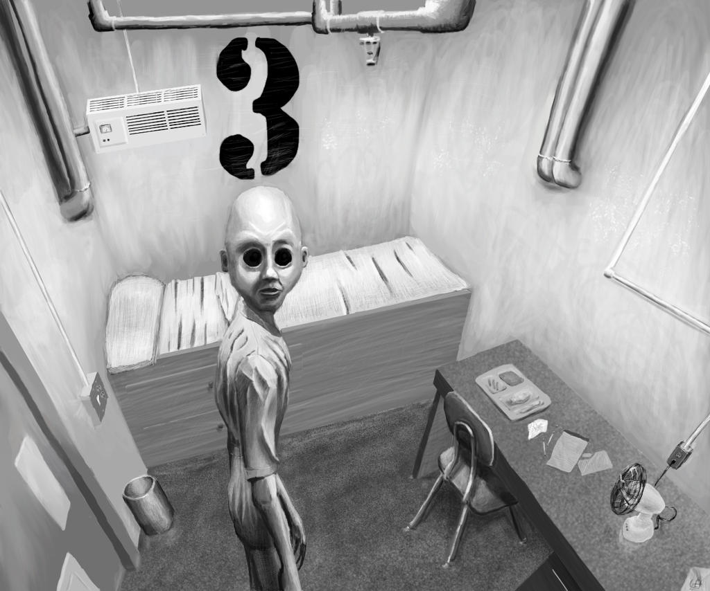
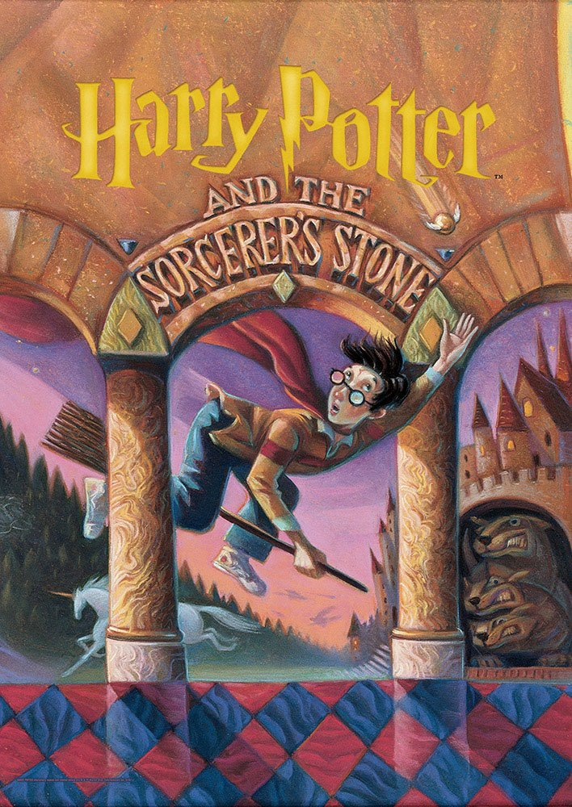

I love to jog simply because it's such a simple thing to partake in. Going for jogs helps clear the mind and a lot of the times the destination is the last thing on your mind. I was a part of my high school's cross country and track team and although not necessarily the fastest, it was still a thrill to test my endurance in the field. I loved the encouraging atmoshpere the team brought and it always felt great to finish up a long session.
I am absolutely enamored with lisetening to tales of horror weather it be real life experiences, or encounters with supernatural enteties. Some of my favorite horror channels include Mr.Nightmare, Maverick Files, Nexpo, & Nick Crowley. I love to hear about disturbing cases regarding missing people, haunted properties and unsolved mysteries. I also grew up listening to CreepyPastas which is why my greatest fear is the fear of the unknown. Channels like CreepsMcPasta & Mr.Creepypasta would leave me shaking at night when I was all alone. Some notable creepypastas that have stuck with me until today would be: Penpal, Rap Rat, Russian Sleep Experiment, and Your Secret Admirer.
I loved to read a lot as a child and I grew up with some famous series like Percy Jackson, Harry Potter, & The Chronicals of Narnia. The funny thing is that I haven't seen a single movie from all the franchises I've read. I remember taking these books everywhere because the stories and adventures in each one was so captivating. The struggles of Harry in discovering who he really is and what his destiny entails, to the progression and tragic curroption of the beautiful land of Narnia made my imagination run wild.
